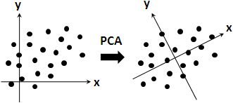
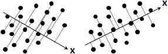
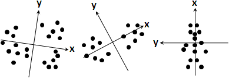
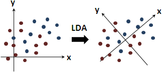

Principle Component Analysis
程度★★ 難度★★
Principle Component Analysis
http://www.cmlab.csie.ntu.edu.tw/~cyy/learning/tutorials/
首先，座標軸位移到資料中心（平均值）。然後，covariance matrix的eigenvalue從小到大排列（資料投影到eigenvector後的變異數），對應的eigenvector就是新的座標軸，剛好互相垂直。
把eigenvalue最小的幾個eigenvector拿掉，就有降維、壓縮的功效。PCA是誤差最小的降維方式。
套用singular value decomposition就能得到eigenvalue與eigenvector。
PCA其實就是移動、旋轉座標軸，讓座標軸原點是平均值，讓所有資料投影到第一座標軸之後的變異數越大越好，然後是第二座標軸、第三座標軸、……。
也可以理解為移動、旋轉所有資料。
更白話一點，PCA就是在空間中重新找一個視角，讓資料看起看最分散；不斷旋轉滾動資料，讓資料看起來最分散。
這裡只有二維空間的圖片，說不太明白。想像一下三維空間，從不同角度看資料，有時寬有時窄、有時散有時密，PCA就是找最散的方向作為主軸。
PCA對付黏在一起的資料，同前述，效果仍舊不好。
PCA主要用途是壓縮。
Linear Discriminative Analysis
程度★★ 難度★★
Linear Discriminative Analysis
PCA處理未分類資料，LDA處理已分類資料。原理相同。
所有資料都已經訂立類別。讓各類資料投影到第一座標軸之後，各類資料的平均值們，變異數越大越好。然後是第二座標軸、第三座標軸、……。
如果各類資料都黏在一起，那麼LDA完全無效。
要做壓縮，將各類資料分別實施PCA即可，全部資料一起實施LDA效果較差。